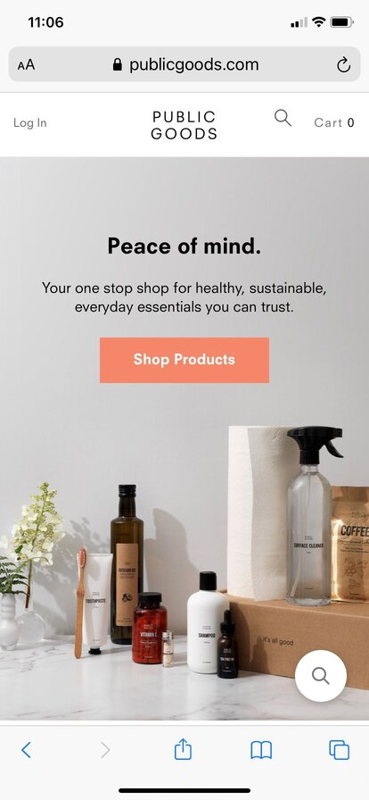
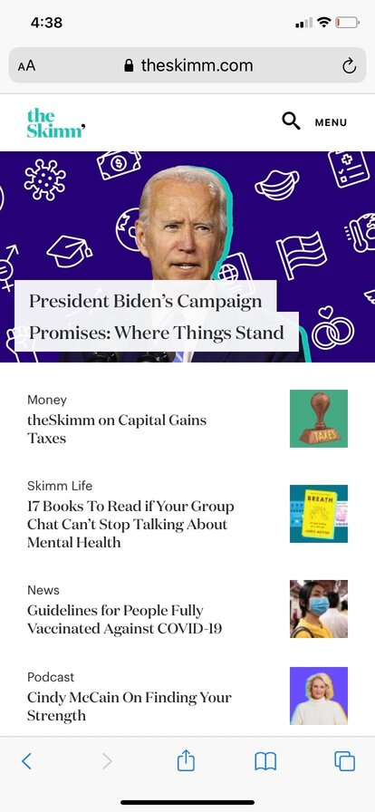
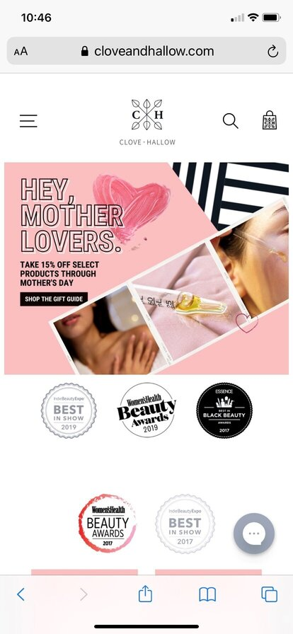

Fitt's Law
Public Goods
https://www.publicgoods.com/ The Public Goods website is a good example of Fitt's Law. Fitt's Law teaches us that placing a button in an ideal location and the proper size will make it easier for the user to engage with the wesite. I think that the public goods website uses this law well. It's easy to move through the site for shopping and learning more about the products they offer. The buttons and images are well placed not only to click, but also to keep you scrolling through.
Repetition
The Skimm
https://www.theskimm.com/ I really like how The Skimm uses the the principle of repetition. Throughout the site you can see a really good use and repetition of color. They consistently use the same teals, blues, and purples. You can also see repetition of shapes. The majority of images are square and utilize the colors used throughout. There is also repetition is the size and fonts of the titles as well as main copy.
Symmetry
Clove & Hallow
https://www.cloveandhallow.com/ Clove and Hallow utitlizzes the principle of symmetry. The way things are laid out on the page creates almost a mirror image. In the areas where they use asymmetry there is still a really nice balance. The keep very equal visual weight on each side of the page. It creates a nice sense of organization and order and also helps create interest and impact when they do use asymmetry in images and other places on the page.